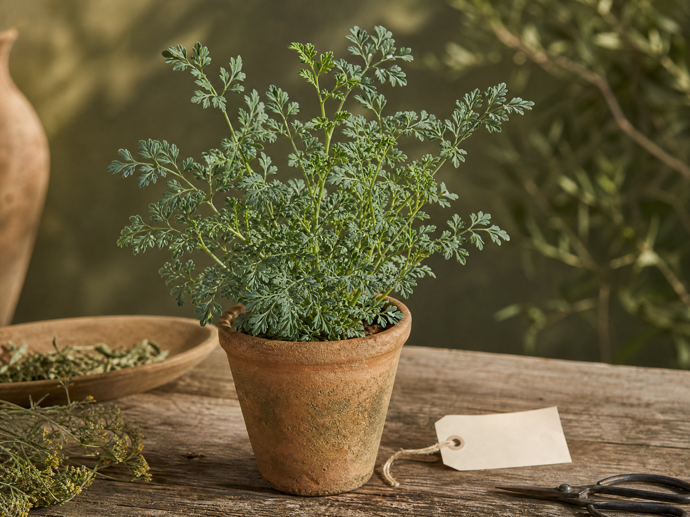
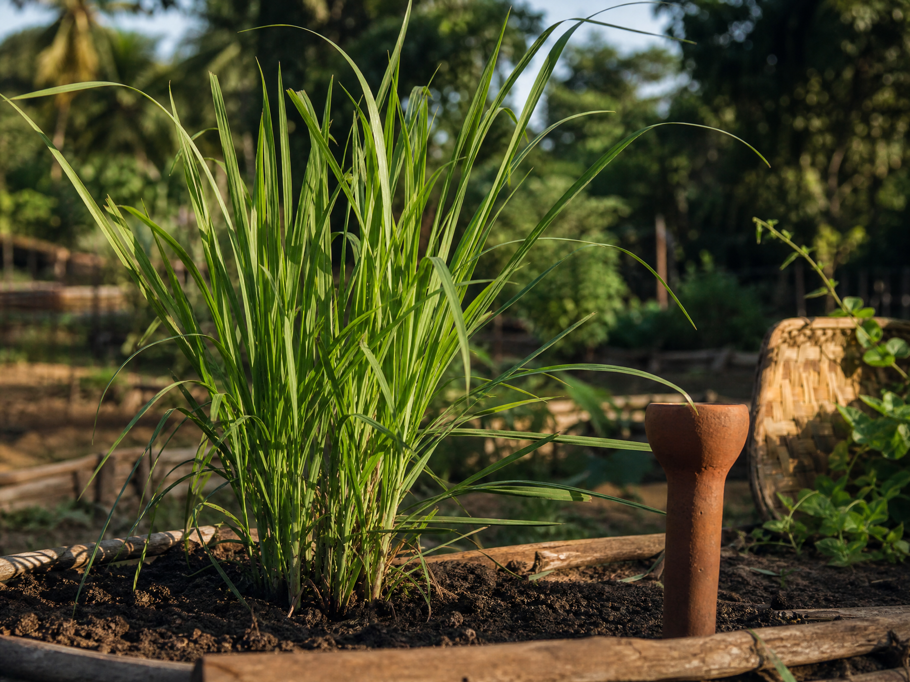
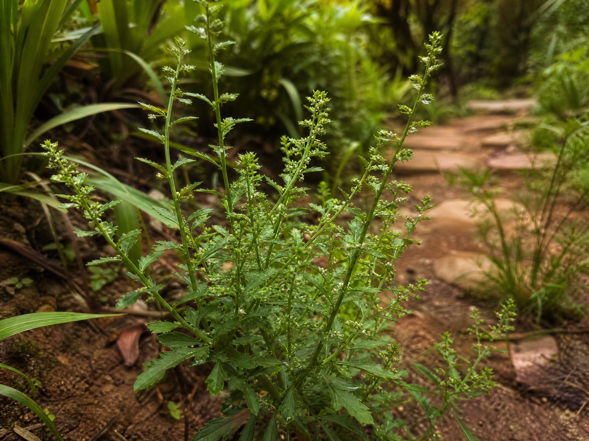

FICHA 01Arruda
Ruta graveolens
Uma planta de presença marcante nos quintais e nas memórias de cuidado compartilhadas entre gerações.
Um catálogo digital para escutar as mulheres que conhecem a terra, reconhecer a ciência das plantas e manter viva a memória de um território.
Mulheres quilombolas, benzedeiras e quebradeiras de coco mantêm uma biblioteca viva em seus quintais, gestos e palavras. Aqui, cada ficha nasce de uma escuta e de uma conversa entre saber tradicional e investigação botânica.

FICHA 01Ruta graveolens
Uma planta de presença marcante nos quintais e nas memórias de cuidado compartilhadas entre gerações.

FICHA 02Cymbopogon citratus
Folhas longas que perfumam a casa e revelam como cultivo, conversa e acolhimento caminham juntos.
É uma das plantas medicinais mais populares do Brasil, amplamente reconhecido por sua eficácia em aliviar problemas digestivos e proteger o fígado.

FICHA 03Dysphania ambrosioides
Pequena, resistente e muito lembrada: uma entrada para investigar nomes, ambientes e histórias de quintal.
Tente outro nome, espécie ou categoria para continuar a busca.
Não há catálogo sem escuta. As histórias são compartilhadas pelas mulheres da comunidade, com autoria, consentimento e o direito de escolher o que deve — ou não — ser publicado.
Memória, território e cuidado transmitidos entre gerações.
Palavra, gesto e presença como formas de acolhimento.
Conhecimento do tempo, do fruto e dos caminhos da mata.
Um processo em quatro movimentos, feito com cuidado para que tecnologia e ciência ampliem — sem apagar — a origem de cada saber.
Entrevistas e relatos orais com as guardiãs do território.
Nome popular, nome científico e conferência botânica.
Texto, áudio e imagem revisados por quem compartilhou.
QR Codes que levam do jardim da escola à história da planta.
Botânica, naturalista e formadora de gerações. Sua trajetória nos lembra que nomear uma planta é também aprender a enxergar o mundo que ela habita.
Conhecer a flora é um primeiro gesto de cuidado com a vida.
— inspiração para o laboratório de botânicaEsta entrada registra um conhecimento cultural. A identificação e as informações científicas devem ser conferidas por profissionais antes de qualquer uso.